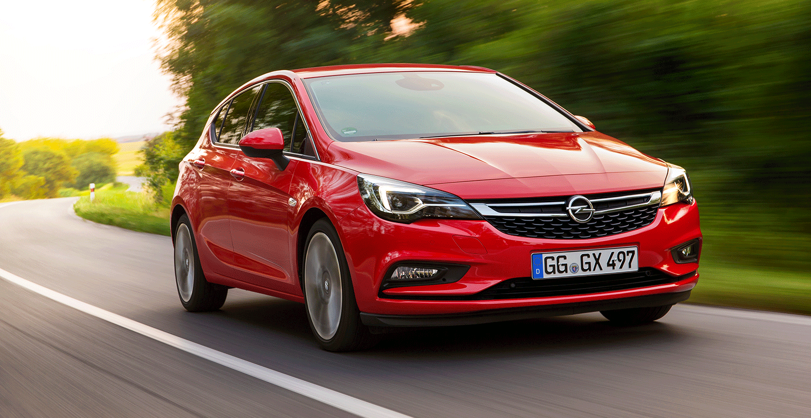

El Opel Astra era uno de los modelos más veteranos del segmento C y, desde hacía tiempo, se especulaba con un lavado de cara que le permitiera seguir compitiendo con sus rivales. Este momento ha llegado y Opel ha presentado su nuevo compacto que, sin ser una nueva generación, sí incluye importantes cambios a nivel de equipamiento y, especialmente, en la gama de motores, apostando notablemente por la eficiencia. Descubre todas las novedades del nuevo Opel Astra 2020.
DetallesLo mas nuevo
Opel Astra
El Opel Astra era uno de los modelos más veteranos del segmento C y, desde hacía tiempo, se especulaba con un lavado de cara que le permitiera seguir compitiendo con sus rivales. Este momento ha llegado y Opel ha presentado su nuevo compacto que, sin ser una nueva generación, sí incluye importantes cambios a nivel de equipamiento y, especialmente, en la gama de motores, apostando notablemente por la eficiencia. Descubre todas las novedades del nuevo Opel Astra 2020.
Peugeot Rifter
El Peugeot Rifter es un modelo completamente nuevo que llega para sustituir al mítico Peugeot Partner. Está basado en la plataforma EMP2 del Grupo PSA y se trata de un vehículo de fabricación nacional, ya que se produce en la fábrica de Citroën de Vigo. Su diseño, al menos en el frontal, es muy parecido al de los últimos lanzamientos de Peugeot. No obstante, incluye unas protecciones plásticas en los bajos que le confieren una imagen más aventurera que la de sus rivales. Además, su habitáculo incluye el diseño i-Cockpit de Peugeot, con un volante muy pequeño y en una posición muy baja. Tiene un enfoque de monovolumen y puede albergar a cinco o a siete pasajeros, y su maletero cubica 597 litros. ¿Sus motores? Diésel y gasolina de entre 75 CV y 131 CV, y puede equipar un cambio manual o automático.
BMW i3
El BMW i3 la primera apuesta de la marca alemana en el mercado de los coches eléctricos. Vio la luz en 2013 y fue actualizado en 2018, con algunas mejores estéticas, en equipamiento y en la gama de motores. En primer lugar, encontramos un motor de 170 caballos apoyado en una batería de 21,6 kWh, que le permite recorrer unos 200 kilómetros, según el protocolo WLTP. Por otro lado, está disponible una versión más potente, BMW i3s, con la misma autonomía, pero con 184 caballos de potencia. Opcionalmente, ambas versiones se pueden combinar con un motor bicilíndrico que aporta unos 130 kilómetros extra.